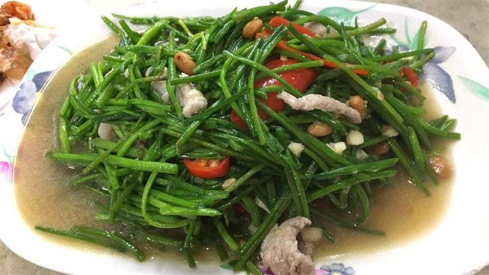

香蕉煎餅
香蕉煎餅裡頭夾了香蕉、棉花糖、煉乳、巧克力醬，外面是香酥的餅皮，裡面是香甜的香蕉，
不過個人是覺得吃到有棉花糖的地方比較好吃，煎餅壓得扁扁的，非常好入口。
黑輪
關東煮在臺灣也十分流行，常將其音譯俗寫作黑輪 （臺灣話：正字為「烏輪」 ，臺羅：oo-lián），其中黑輪也稱為甜不辣。「黑輪（臺灣話：烏輪，臺羅：oo-lián）」是台語中帶有齒音性質的邊音導致的類化；關東煮在日本時代傳入台灣，
直至今日台灣的關東煮大部分已獨立為當地口味，且在放置的材料上，也有相當的差異性。外觀上也有長條、圓形扁平狀的區別，主要由魚漿製成。
炒水蓮

水蓮菜又稱為「龍骨瓣莕菜」，是水蓮的一種。原產於馬來西亞、印度、菲律賓與琉球，曾經廣闊分佈於台灣由北至南的平地河沼、水塘，但隨著環境開發，使生存空間銳減，僅限於高雄少數池塘中可看見野生或半野生族群，族群數量非常少。
全台灣有九成的水蓮皆出產自高雄美濃，水蓮通常身長在水底，綠色細長一年四季都能生長。
羊肉爐
羊肉爐是臺灣自1970年代流行至今的羊肉火鍋，興盛於岡山及溪湖。火鍋料常見炸豆皮、高麗菜等，副食常配上拌麻油麵線，沾醬常見為豆瓣醬、豆腐乳或兩者相混的特調醬汁。
羊肉爐常見於冬令進補。然而並非所有民眾皆可接受羊羶味，因此也有業者推出去除羊羶味之羊肉爐。